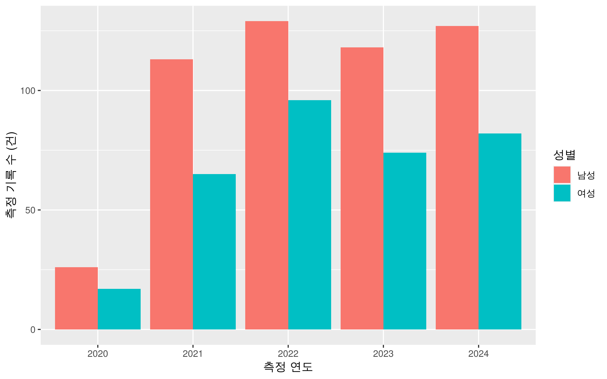
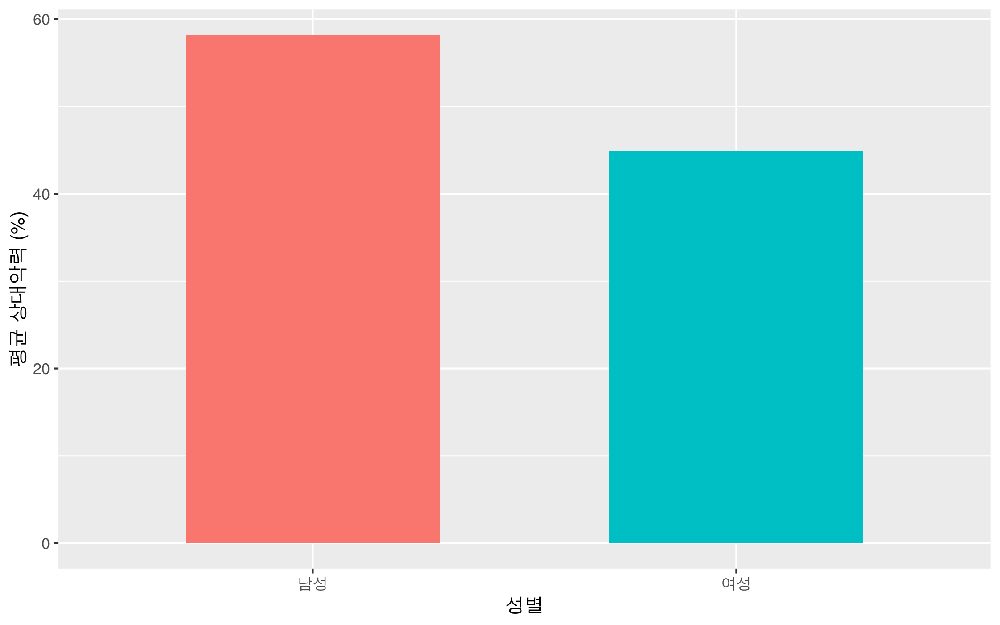
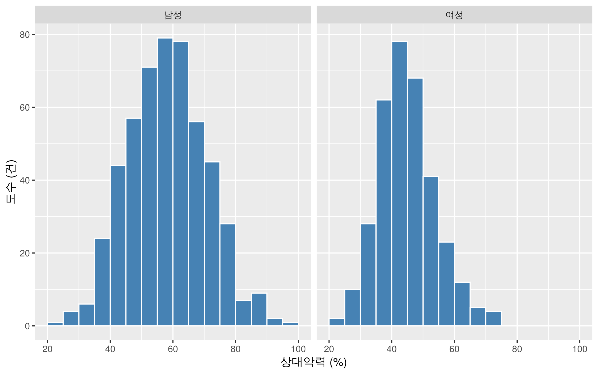
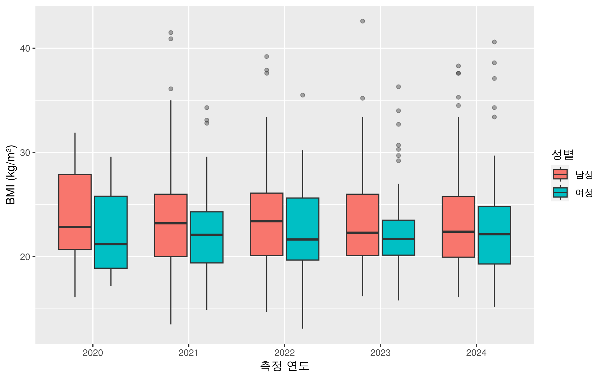
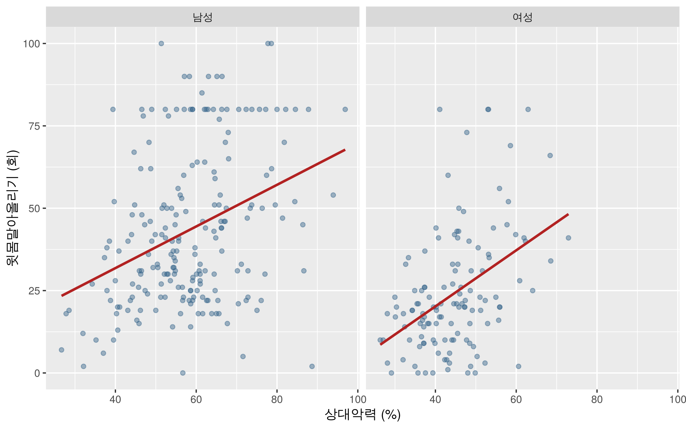
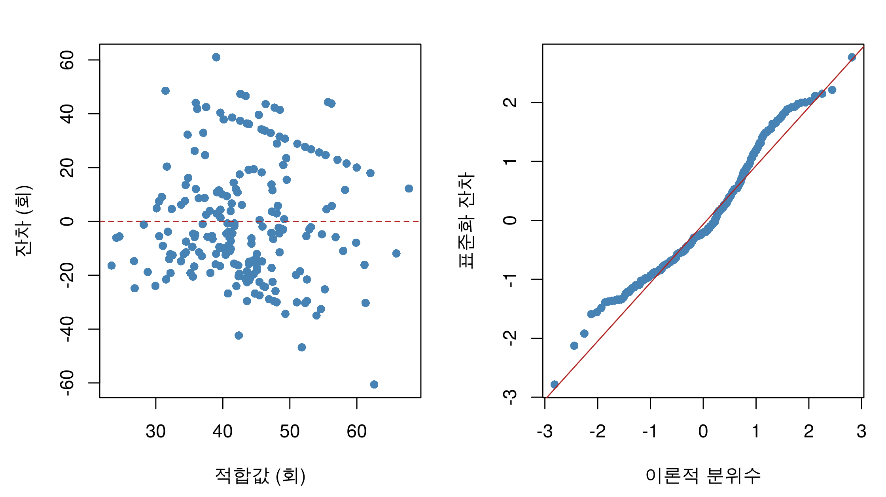

이 장에서는 train_R의 「국민체력 100 자료를 이용한 데이터 분석 예제」에 포함된 측정 자료를 이용하여 앞의 세 장을 종합적으로 실습합니다. 기술통계로 자료의 특성을 요약하고, 기본 R 그래프와 ggplot2로 분포와 관계를 확인한 뒤, 선형회귀모형으로 관계를 설명하고 예측합니다.
중심 분석 질문은 “청소년의 상대악력이 높을수록 윗몸말아올리기 횟수도 많은가?”입니다. 분석 대상과 변수의 단위를 먼저 정하고, 결측값 처리에 따라 표본 수가 어떻게 달라지는지 기록합니다. 각 절의 실습을 순서대로 실행한 뒤 마지막의 종합 과제를 수행합니다.
4.1 분석 질문과 자료 준비
4.1.1 앞 장과 실습의 연결
앞에서 다룬 내용
이 장의 실습
결과물
기술통계와 기본 R 시각화
도수·비율, 평균·분산·표준편차·변동계수, 분위수 계산
자료의 구성과 분포 요약표
ggplot2
막대그래프, 히스토그램, 상자그림, 산점도와 패널 작성
집단별 분포와 관계를 나타낸 그림
선형회귀분석
상관계수, lm(), 잔차 진단, predict()
회귀식, 적합도, 구간 예측과 해석
4.1.2 원자료와 실습 파일
원자료는 train_R에 포함된 sample_data_sports100.xlsx와 column_info.xlsx입니다. 실습에서는 측정 파일의 전체 2,000행 중 필요한 11개 열을 CSV로 옮긴 sports100-practice.csv를 사용합니다. 값과 결측값은 원본 그대로 유지했으며, 회원번호와 분석에 사용하지 않는 열은 포함하지 않았습니다. 변수 설명도 sports100-variables.csv로 제공합니다.
원고의 일부 설명에는 청소년 1,000명으로 기재되어 있으나, 실제 파일은 청소년·성인·어르신이 함께 있는 2,000건입니다. 이 장에서는 파일을 확인한 결과에 따라 분석 대상을 정합니다. 자료의 한 행을 측정 기록 한 건으로 해석하며, 표본의 모집단 대표성이 확인된 자료로 가정하지 않습니다.
강의 프로젝트를 사용하는 경우 자료는 data 폴더에 있습니다. 파일을 개별로 내려받으면 실습 CSV와 변수 설명 CSV를 Rmd 또는 R 코드가 있는 폴더의 data 하위 폴더에 저장합니다. 실행 파일이 있는 폴더를 작업 폴더로 지정합니다. 이 자료는 원본 강의에 포함된 표본 파일을 사용합니다.
'data.frame': 2000 obs. of 11 variables:
$ AGE_GBN : chr "성인" "청소년" "성인" "청소년" ...
$ TEST_AGE : int 59 17 19 13 17 15 46 33 38 17 ...
$ TEST_MD : chr "2023-09-25" "2023-04-12" "2022-05-18" "2022-05-11" ...
$ TEST_SEX : chr "F" "F" "F" "F" ...
$ ITEM_F001: num 160 160 163 157 169 ...
$ ITEM_F002: num 51.5 75.8 57.4 61.4 67.1 59.4 81.1 78.3 74.7 53.7 ...
$ ITEM_F007: num 23.4 31.2 21.8 28 24.9 39.4 47 40.1 42.9 36 ...
$ ITEM_F008: num 23.8 34.2 23.8 30 29.9 39.4 48.2 48.2 49.1 39.1 ...
$ ITEM_F009: int NA NA NA NA 21 NA NA NA NA 23 ...
$ ITEM_F010: int NA 15 NA NA NA 43 NA NA NA NA ...
$ ITEM_F018: num 20.2 29.7 21.6 24.8 23.5 21.7 25.9 25.6 25.9 17.5 ...
head(nfa_raw)
AGE_GBN TEST_AGE TEST_MD TEST_SEX ITEM_F001 ITEM_F002 ITEM_F007 ITEM_F008
1 성인 59 2023-09-25 F 159.6 51.5 23.4 23.8
2 청소년 17 2023-04-12 F 159.8 75.8 31.2 34.2
3 성인 19 2022-05-18 F 162.9 57.4 21.8 23.8
4 청소년 13 2022-05-11 F 157.4 61.4 28.0 30.0
5 청소년 17 2024-06-20 F 168.9 67.1 24.9 29.9
6 청소년 15 2022-09-19 M 165.4 59.4 39.4 39.4
ITEM_F009 ITEM_F010 ITEM_F018
1 NA NA 20.2
2 NA 15 29.7
3 NA NA 21.6
4 NA NA 24.8
5 21 NA 23.5
6 NA 43 21.7
4.1.3 변수의 의미와 단위
원래 변수명
내용
분석할 때의 유형과 단위
AGE_GBN
연령 구분
범주형: 청소년·성인·어르신
TEST_AGE
연령
수치형, 세
TEST_MD
측정일
날짜
TEST_SEX
성별 코드
범주형: M·F
ITEM_F001
신장
연속형 측정값, cm
ITEM_F002
체중
연속형 측정값, kg
ITEM_F007, ITEM_F008
왼손·오른손 악력
연속형 측정값, kg
ITEM_F009
윗몸말아올리기
이산형 수치, 회
ITEM_F010
반복점프
이산형 수치, 회
ITEM_F018
BMI
연속형 수치, kg/m²
윗몸말아올리기 횟수는 이산형이지만, 횟수의 평균이나 회귀분석을 할 때에는 숫자로 사용합니다. 성별과 연도별 집단을 구분할 때에는 factor를 사용합니다.
실습 1. 연령 구분별 기록 수와 성별 기록 수를 확인합니다. 전체 자료를 청소년 자료로 해석할 수 있는지 판단합니다.
table(nfa_raw$AGE_GBN, useNA ="ifany")
성인 어르신 청소년
1128 25 847
table(nfa_raw$TEST_SEX, useNA ="ifany")
F M
754 1246
range(nfa_raw$TEST_AGE, na.rm =TRUE)
[1] 13 65
전체 기록은 청소년 847건, 성인 1,128건, 어르신 25건으로 구성되어 있습니다. 이후 분석은 청소년으로 구분되어 있으면서 연령이 13–18세인 기록으로 한정합니다.
4.2 분석 자료 구성과 결측값 점검
4.2.1 변수 이름과 자료형 정리
select()로 필요한 열을 고르면서 읽기 쉬운 이름을 부여합니다. mutate()는 열의 변환 또는 생성을, filter()는 조건에 맞는 행의 선택을 수행합니다. %>%는 앞 단계의 결과를 다음 함수로 전달합니다.
원본 예제는 두 근지구력 항목을 선택 측정 항목으로 설명합니다. 실제 청소년 자료에는 윗몸말아올리기만 있는 기록 334건, 반복점프만 있는 기록 493건, 둘 다 있는 기록 1건, 둘 다 없는 기록 19건이 있습니다. 따라서 모든 열에 na.omit()을 적용하면 분석에 필요하지 않은 항목의 결측값 때문에도 기록이 제외됩니다.
윗몸말아올리기를 측정하지 않은 경우의 NA와 실제 수행 횟수 0회를 구분해야 합니다. 결측값을 0으로 바꾸면 평균과 회귀계수가 달라집니다. 이후에는 각 분석에 필요한 변수에 대해서만 사용 가능한 기록을 선택합니다.
4.2.3 변수 설명서의 범위 확인
column_info.xlsx의 min_teen, max_teen에는 청소년 측정값의 점검 범위가 제시되어 있습니다. 이 범위는 제공된 강의 자료의 점검 기준이며, 임상적 정상 범위나 공식 체력 인증 기준으로 해석하지 않습니다.
윗몸말아올리기 120회인 기록 3건이 설명서의 상한 100회를 초과합니다. 이 사실만으로 입력 오류라고 단정할 수는 없습니다. 본 실습의 주 분석에서는 해당 값들을 제외 대상으로 표시하고, 원본 값을 보존한 별도 열에서 결측값으로 처리합니다. 마지막 과제에서는 이 세 건을 포함했을 때 결과가 달라지는지 비교합니다.
teen <- teen %>%mutate(grip_max =pmax(grip_left, grip_right, na.rm =TRUE),grip_max =ifelse(is.na(grip_left) &is.na(grip_right), NA_real_, grip_max),grip_rel =ifelse(weight_kg >0, grip_max / weight_kg *100, NA_real_) )reg_data <- teen %>%filter(!is.na(sex), is.finite(grip_rel), is.finite(curl_clean))sample_flow <-data.frame( 단계 =c("원본 측정 기록", "13–18세 청소년", "상대악력 계산 가능","윗몸말아올리기 측정", "범위 점검 후 윗몸말아올리기","두 변수와 성별이 있는 회귀분석 자료"), 기록수 =c(nrow(nfa_raw), nrow(teen), sum(is.finite(teen$grip_rel)),sum(!is.na(teen$curl_up)), sum(!is.na(teen$curl_clean)), nrow(reg_data)))sample_flow
단계 기록수
1 원본 측정 기록 2000
2 13–18세 청소년 847
3 상대악력 계산 가능 845
4 윗몸말아올리기 측정 335
5 범위 점검 후 윗몸말아올리기 332
6 두 변수와 성별이 있는 회귀분석 자료 332
table(reg_data$sex)
남성 여성
206 126
pmax()는 같은 행의 두 값 중 큰 값을 반환합니다. 한 손만 측정된 경우에는 그 값을 사용하고, 두 손 모두 결측이면 상대악력도 결측으로 둡니다. 체중이 0 이하이면 나눗셈에 사용하지 않습니다. 이 자료에서 최종 회귀분석 대상은 332건이며 남성 206건, 여성 126건입니다. 표의 중간 단계는 각 항목의 사용 가능 수를 나타내므로 단순한 순차 삭제 수로 해석하지 않습니다.
4.3 기술통계와 기본 R 시각화
4.3.1 범주형 자료의 도수와 비율
실습 3. 청소년 전체 자료에서 성별 도수와 비율을 계산합니다. 다음으로 연도별 성별 비율을 계산하고, 비율의 분모가 어떻게 다른지 설명합니다.
sex_count <-table(teen$sex)sex_count
남성 여성
513 334
prop.table(sex_count) *100
남성 여성
60.56671 39.43329
year_sex <-table(teen$year, teen$sex)year_sex
남성 여성
2020 26 17
2021 113 65
2022 129 96
2023 118 74
2024 127 82
round(prop.table(year_sex, margin =1) *100, 1)
남성 여성
2020 60.5 39.5
2021 63.5 36.5
2022 57.3 42.7
2023 61.5 38.5
2024 60.8 39.2
prop.table(sex_count)는 청소년 전체 기록 수를 분모로 사용합니다. 교차표에서 margin = 1을 지정하면 각 행, 즉 해당 연도 안의 기록 수가 분모입니다. 이때 행별 비율의 합은 100%입니다. “전체에서의 비율”과 “연도 안에서의 비율”을 구분하여 보고합니다.
막대그래프의 성별은 서로 구분되는 범주이고, 히스토그램의 가로축은 연속적인 측정값의 구간입니다. 히스토그램은 breaks를 바꾸면 모양이 달라질 수 있으므로 한 가지 구간 설정만으로 분포를 판단하지 않습니다.
4.4 ggplot2로 분포와 관계 탐색
4.4.1 도수와 요약값의 시각화
실습 6. 연도별 성별 기록 수를 막대그래프로 나타내고, 성별 평균 상대악력을 별도의 그래프로 나타냅니다. 두 그래프에서 geom_bar()와 geom_col()을 다르게 사용하는 이유를 설명합니다.
ggplot(teen, aes(x = year, fill = sex)) +geom_bar(position ="dodge") +labs(x ="측정 연도", y ="측정 기록 수 (건)", fill ="성별")

그림 4.3: 연도별 성별 기록 수. 각 막대는 측정 기록의 도수입니다.
p_grip_mean <-ggplot(grip_summary, aes(x = sex, y = mean_grip, fill = sex)) +geom_col(width =0.6, show.legend =FALSE) +labs(x ="성별", y ="평균 상대악력 (%)")p_grip_mean

그림 4.4: 성별 평균 상대악력. 막대의 높이는 이미 계산한 평균입니다.
geom_bar()는 입력 자료의 행을 세어 도수를 계산합니다. geom_col()은 grip_summary에 이미 계산된 mean_grip을 막대의 높이로 사용합니다. 평균만으로는 집단 안의 산포를 알 수 없으므로 표준편차와 분포 그림도 함께 확인합니다.
4.4.2 집단별 분포 비교
실습 7. 상대악력의 분포를 성별 패널로 나누고, 청소년의 연도별 BMI 분포를 성별 상자그림으로 비교합니다.
ggplot(filter(teen, !is.na(grip_rel)), aes(x = grip_rel)) +geom_histogram(binwidth =5, boundary =0, fill ="steelblue", color ="white") +facet_wrap(~ sex) +labs(x ="상대악력 (%)", y ="도수 (건)")

그림 4.5: 같은 구간 너비로 작성한 성별 상대악력 히스토그램.
두 패널은 같은 축과 구간 너비를 사용합니다. 성별 표본 수가 다르므로 막대 높이의 차이에 표본 수의 차이도 반영됩니다.
ggplot(teen, aes(x = year, y = bmi, fill = sex)) +geom_boxplot(outlier.alpha =0.4) +labs(x ="측정 연도", y ="BMI (kg/m²)", fill ="성별")

그림 4.6: 청소년의 연도별·성별 BMI 분포.
중앙값, 사분위범위, 수염 밖의 관측값을 비교합니다. 수염 밖의 점이 곧 입력 오류를 의미하지는 않습니다. 또 연도별 분포 차이를 동일한 사람의 변화로 해석하지 않습니다. 연도마다 측정 대상의 구성과 표본 수가 다를 수 있기 때문입니다. 여기서는 분포를 비교하며, 청소년 BMI에 성인 기준을 적용하여 건강 상태를 분류하지 않습니다.
4.4.3 상대악력과 윗몸말아올리기의 관계
실습 8. 두 변수가 함께 있는 reg_data로 산점도를 작성합니다. 성별 패널을 나누고 선형회귀 추세선을 추가합니다.
p_nfa_relation <-ggplot(reg_data, aes(x = grip_rel, y = curl_clean)) +geom_point(alpha =0.45, color ="steelblue4") +geom_smooth(method ="lm", se =FALSE, color ="firebrick") +facet_wrap(~ sex) +labs(x ="상대악력 (%)", y ="윗몸말아올리기 (회)")p_nfa_relation

그림 4.7: 상대악력과 윗몸말아올리기의 관계. 성별로 다른 회귀직선을 적합했습니다.
전체 자료에 직선 하나를 그리면 집단 안의 관계와 집단 사이의 차이가 함께 반영됩니다. 먼저 패널별로 관계의 방향과 퍼짐을 확인합니다. 패널별 기울기가 달라 보인다는 사실만으로 그 차이가 통계적으로 확인되었다고 결론 내리지는 않습니다.
4.5 선형회귀분석과 예측
4.5.1 상관계수와 분석 대상
실습 9. 전체와 성별 상관계수를 구합니다. 이후 주 분석에서는 남성 청소년 자료만 사용하여 단순선형회귀모형을 적합합니다.
cor(reg_data$grip_rel, reg_data$curl_clean)
[1] 0.4901429
reg_data %>%group_by(sex) %>%summarise(n =n(), r =cor(grip_rel, curl_clean), .groups ="drop")
# A tibble: 2 × 3
sex n r
<fct> <int> <dbl>
1 남성 206 0.348
2 여성 126 0.433
결정계수는 약 0.121으로, 이 분석 자료에서 관측된 윗몸말아올리기 변동의 약 12.1%를 회귀식이 설명합니다. RMSE는 약 22.01회입니다. 기울기가 양수여도 직선 주변의 퍼짐이 크면 개인별 예측의 불확실성이 큽니다. 이 값은 모형을 적합한 자료에서의 오차이며 새로운 자료에서 확인한 예측 성능은 아닙니다.
4.5.3 잔차 진단
실습 11. 적합값과 잔차의 관계, 표준화 잔차의 정규 Q-Q 그림을 확인하고 모형의 한계를 작성합니다.
old_par <-par(mfrow =c(1, 2), mar =c(4.5, 4.5, 2, 1))plot(fitted(fit_nfa), resid(fit_nfa), pch =16, col ="steelblue",xlab ="적합값 (회)", ylab ="잔차 (회)")abline(h =0, lty =2, col ="firebrick")qqnorm(rstandard(fit_nfa), pch =16, col ="steelblue", main ="",xlab ="이론적 분위수", ylab ="표준화 잔차")qqline(rstandard(fit_nfa), col ="firebrick")

그림 4.8: 남성 청소년 모형의 잔차 진단. 왼쪽은 적합값과 잔차, 오른쪽은 정규 Q-Q 그림입니다.
par(old_par)
윗몸말아올리기는 음수가 될 수 없는 횟수 자료이며, 이번 주 분석은 설명서 범위인 0–100회로 한정되어 있습니다. 이런 자료에서는 오차의 정규성과 일정한 분산이라는 가정이 적절하지 않을 수 있습니다. 점들의 퍼짐과 꼬리의 이탈을 살펴보고, 단순선형회귀가 개인의 수행 횟수를 충분히 표현하는지 검토합니다.
4.5.4 점예측과 구간 예측
실습 12. 상대악력이 50%인 남성 청소년의 평균반응 신뢰구간과 새로운 개인의 예측구간을 구합니다.
점예측값은 약 38.15회입니다. 평균의 예측이므로 정수가 아닐 수 있습니다. 개인의 95% 예측구간은 약 -5.6회에서 81.9회입니다. 음수인 하한은 실제로 가능한 수행 횟수가 아닙니다. 이는 정규오차를 전제한 선형모형의 예측구간을 횟수 자료에 그대로 적용할 때의 한계를 보여 줍니다. 하한만 임의로 0으로 바꾸어 동일한 95% 예측구간이라고 보고하지 않습니다.
50%는 이 분석 자료의 설명변수 범위 안에 있지만, 범위 안에서 예측했다는 이유만으로 모형의 적절성이 보장되지는 않습니다. 자료의 범위, 잔차의 특성과 예측구간을 함께 확인해야 합니다.
4.6 종합 과제와 분석 보고서
4.6.1 과제 1 · 요약통계와 분포 비교
여성 청소년 자료에서 신장과 체중의 평균, 표준편차, 변동계수를 구합니다. 어느 변수가 평균 대비 상대적 산포가 큰지 설명하고, 두 변수의 단위가 다른 상황에서 표준편차만 비교하면 어떤 문제가 있는지 작성합니다.
두 모형은 서로 다른 관측값과 반응변수 분포에서 구한 결과입니다. 계수의 크기와 불확실성, 산포, 표본 수를 함께 확인합니다. 집단별 계수의 차이를 검정하려면 별도의 모형과 검정이 필요합니다.
4.6.4 과제 4 · 범위 점검의 영향을 비교하기
주 분석에서 제외한 윗몸말아올리기 120회 기록을 포함하여 남성 모형을 다시 적합합니다. 분석 결과가 값의 처리 방식에 얼마나 민감한지 비교하고, 보고서에 기록해야 할 사항을 작성합니다.
과제 4 해설
male_all <- teen %>%filter(sex =="남성", is.finite(grip_rel), is.finite(curl_up))fit_nfa_all <-lm(curl_up ~ grip_rel, data = male_all)data.frame(analysis =c("설명서 범위 적용", "원래 측정값 포함"),n =c(nobs(fit_nfa), nobs(fit_nfa_all)),slope =c(unname(coef(fit_nfa)[2]), unname(coef(fit_nfa_all)[2])),R_squared =c(summary(fit_nfa)$r.squared, summary(fit_nfa_all)$r.squared),RMSE =c(sqrt(mean(resid(fit_nfa)^2)), sqrt(mean(resid(fit_nfa_all)^2))))
analysis n slope R_squared RMSE
1 설명서 범위 적용 206 0.6319850 0.1212473 22.00608
2 원래 측정값 포함 209 0.6720695 0.1206257 23.46887
원래 값과 제외 사유를 보존하고, 사용한 기준과 각 분석의 표본 수를 보고합니다. 결정계수가 더 높거나 p값이 더 작다는 이유로 처리 방식을 선택하지 않습니다. 원자료 제공자에게 측정 단위·상한·입력 관행을 확인할 수 있다면 그 정보를 우선하여 판단합니다.
4.6.5 보고서 작성과 결과 저장
다음 요소를 포함하여 1–2쪽 분량의 분석 보고서를 작성합니다.
자료와 분석 대상: 자료의 출처, 연령 조건, 측정 기간, 분석 기록 수를 제시합니다.
자료 처리: 결측값과 범위 밖 값의 처리, 상대악력 계산 방법을 설명합니다.
기술통계와 시각화: 요약표 1개, 분포 그림 1개, 관계 그림 1개를 제시하고 단위와 분모를 명시합니다.
회귀분석: 회귀식, 기울기의 해석, 결정계수와 RMSE, 잔차 진단을 제시합니다.
예측과 한계: 점예측과 구간을 구분하고, 횟수 자료에 선형모형을 적용한 한계와 표본의 적용 범위를 서술합니다.
다음은 주 분석 결과를 정리한 문장 예시입니다.
제공된 2,000건의 측정 기록 중 13–18세 청소년 847건을 선정하였다. 상대악력과 범위 점검을 통과한 윗몸말아올리기 값이 모두 있는 남성 청소년 206건으로 단순선형회귀분석을 수행하였다. 상대악력이 10퍼센트포인트 큰 경우 추정한 평균 수행 횟수는 약 6.32회 많았다. 결정계수는 0.121, 적합 자료의 RMSE는 22.01회였다. 양의 관계가 관찰되었으나 개인별 퍼짐이 크고 예측구간에 음수가 포함되어, 이 모형만으로 개인의 수행 횟수를 예측하는 데 한계가 있다. 이 관계를 훈련 효과나 전체 청소년의 특성으로 일반화하지 않았다.
필요한 경우 요약표와 그래프를 저장합니다. 다음 코드는 직접 실행할 때에만 파일을 생성합니다.
이 장은 제공된 train_R.qmd의 5장과 함께 제공된 측정·변수 설명 파일을 이용하여 작성했습니다. 원본의 가상 등급 기준 파일인 class_level.xlsx는 이번 실습에 사용하지 않습니다. 이 장의 범위는 기술통계, 시각화와 단순선형회귀분석의 종합 적용입니다.